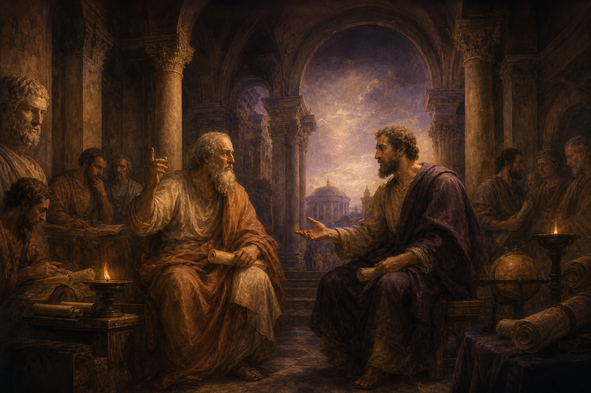

Ищем истину
Карта знаний: философия, психология, религия, герметизм, алхимия, розенкрейцеры, гравюры.

Разделы
У каждого раздела — идеи, источники, связи. Выберите хаб категории.
Философия
Разум, опыт, этика, феноменология
Психология
Сознание, бессознательное, сны, архетипы
Религия
Сакральное, мистика, ритуал
Герметизм
Corpus Hermeticum, соответствия, гнозис
Алхимия
Nigredo, albedo, rubedo · magnum opus
Розенкрейцеры
Fama, роза и крест, миф братства
Гравюры
Визуальный учебник без слов